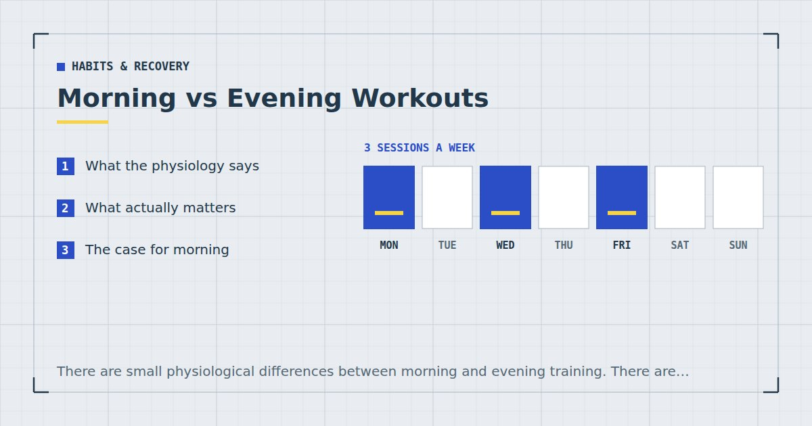

Habits & Recovery
Morning vs Evening Workouts: Which Fits a Busy Life?
There are small physiological differences between morning and evening training. There are much larger differences in which one actually happens, and that is the variable worth optimising.

This question attracts more confident advice than the evidence supports. Small physiological differences do exist; they are much smaller than the difference between a session that happens and one that does not.
What the physiology says
Three findings are reasonably consistent, and all three are modest.
Strength and power tend to peak in the late afternoon or early evening. Core body temperature follows a circadian rhythm and is higher then, and muscle function is somewhat temperature-dependent. The differences reported are typically small — a few per cent — and matter more to a competitive athlete than to someone doing push-ups in a living room.
Mornings feel harder, particularly early. Body temperature is at its lowest, joints have not been loaded for hours, and the spine holds more fluid overnight, which is why it feels less willing to bend. This is a real effect and it is largely mitigated by a slightly longer warm-up — see how to warm up in five minutes.
The body adapts to when you train. Train consistently in the morning and the morning performance gap narrows. Whatever disadvantage mornings have is partly a training-state effect rather than a fixed one.
What the evidence does not support: that morning training burns more fat in any way that matters over a day, or that evening training is meaningfully worse for sleep for most people. Both claims are made confidently and rest on very little.
What actually matters
Consistency, by a distance. A session in the physiologically worse window that happens three times a week beats one in the better window that happens once.
Since the physiological difference is a few per cent and the adherence difference is frequently a factor of two or three, the correct question is not "when is best?" but "when will this reliably happen?"
For most people with a job, that question has a clearer answer than the physiology does.
The case for morning
It cannot be cancelled by your day. The strongest argument. A session at 6:50am is finished before anything can interfere. Evening sessions compete with work overrunning, tiredness, social plans and every other thing that materialises after five o'clock.
Fewer decision points. You have not yet had a difficult day to use as a reason.
Reliable anchors. Morning routines are unusually consistent — the shower, the kettle, the school run — which makes them strong cues for habit formation, per habit stacking for exercise.
Against it: it feels harder, it requires either earlier waking or a compressed morning, and if it costs you sleep it is frequently a bad trade — see below.
The case for evening
You are warm and awake. Sessions genuinely feel better and performance is marginally higher.
No sleep cost. You are not trading recovery for training time.
More time available. An evening can accommodate forty minutes where a morning cannot.
Better for technical work. Skill and coordination are better later in the day, which matters if you are working on something like a handstand or a pistol squat.
Against it: reliability. Evenings are the least defensible hours most people own, and this is the single biggest reason evening plans fail.
The sleep question
Two separate issues, often conflated.
Does evening training disrupt sleep? For most people, not much. Individual variation is large — some people find hard training within an hour of bed keeps them awake, others sleep better for it. Worth testing rather than assuming. If it does affect you, moving the session earlier in the evening usually resolves it, and caffeine taken pre-workout is a more common culprit than the exercise.
Does getting up earlier to train cost you? This one matters more, and the answer is often yes.
If you are already sleeping enough, waking an hour earlier is a fine trade. If you are already short, you are removing recovery to add stimulus, which is the wrong direction. Sleep has documented effects on training performance and recovery,1 and a fifteen-minute session bought with sixty minutes of sleep is very likely a net loss.
The practical test: if you need an alarm and feel unrested, do not fund your training from your sleep. Find the time elsewhere, or accept fewer sessions at better quality. Two sessions a week still meets the adult recommendation for muscle-strengthening activity.2 More on this in sleep and strength.
The best time to train is the time that survives a bad week. For most people with a job, that is earlier than they would like.
How to choose
Four questions, in order.
1. Are you currently sleeping enough? If no, do not choose a morning slot that requires waking earlier. That decision comes before everything else.
2. Which slot has a reliable anchor? Something that already happens without fail, at a workable time, in roughly the right place.
3. Which slot has been more reliable historically? Not which you prefer — which one actually happened over the last three months.
4. What kind of session is it? Technical or maximal work suits later. General strength and conditioning works fine either way. A short mobility-focused session suits mornings well.
For most people training around a job with no gym, the honest answer is: morning if you can do it without cutting sleep, evening otherwise, and a lunch break if your work allows it — which is frequently the most reliable slot of the three because it already exists in your calendar, per the lunch break workout.
Switching
If you are moving from one to the other, two things worth knowing.
Expect two to three weeks of feeling worse. The body adapts to when you train, so the first morning sessions after months of evening training will feel disproportionately hard. That is transition rather than a verdict on mornings.
Reduce the difficulty for the first fortnight. Same exercises, fewer sets, further from failure. This prevents the first week from being punishing enough to end the experiment.
And do not switch mid-programme if you are trying to judge whether the programme works. Change one variable at a time, or your numbers become uninterpretable — see tracking progress without a gym or scale.
Where to go next
For a morning session, see the 10-minute morning workout. For building the choice into a week, see the weekly home workout schedule.
Frequently asked questions
Is it better to work out in the morning or evening?
Physiologically, late afternoon and early evening have a small edge for strength and power — a few per cent. Practically, the more important question is which slot reliably happens, and for most people with a job that is mornings or a lunch break rather than evenings.
Does morning exercise burn more fat?
The evidence does not support this in any way that matters over a day. Total energy balance dominates, and acute differences in fuel use are largely offset later.
Does working out in the evening ruin sleep?
For most people, not much, though individual variation is large. If it affects you, moving the session earlier in the evening usually resolves it. Caffeine taken as a pre-workout is a more common culprit than the exercise itself.
Is it worth waking up earlier to exercise?
Only if you are already sleeping enough. If you are already short, you are removing recovery to add stimulus, which is the wrong direction. A fifteen-minute session bought with sixty minutes of sleep is very likely a net loss.
Why do morning workouts feel harder?
Body temperature is at its lowest, joints have not been loaded for hours, and the spine holds more fluid overnight. A slightly longer warm-up mitigates most of it, and the effect diminishes as your body adapts to training at that time.
How long does it take to adjust to morning training?
Two to three weeks of feeling worse before it normalises. Reduce the difficulty for the first fortnight — same exercises, fewer sets, further from failure — so the transition does not end the experiment.
Sources and further reading
- Bonnar D, Bartel K, Kakoschke N, Lang C. “Sleep Interventions Designed to Improve Athletic Performance and Recovery: A Systematic Review of Current Approaches.” Sports Medicine, 2018;48(3):683–703. PubMed.
- World Health Organization. WHO Guidelines on Physical Activity and Sedentary Behaviour. 2020.
- NHS. Physical activity guidelines for adults aged 19 to 64.
- Schoenfeld BJ, Ogborn D, Krieger JW. “Dose-response relationship between weekly resistance training volume and increases in muscle mass: A systematic review and meta-analysis.” Journal of Sports Sciences, 2017;35(11):1073–1082. PubMed.
Comments
Comments are not enabled yet. Add a hosted comment embed (Disqus, Commento, Giscus) inside this container when you are ready.